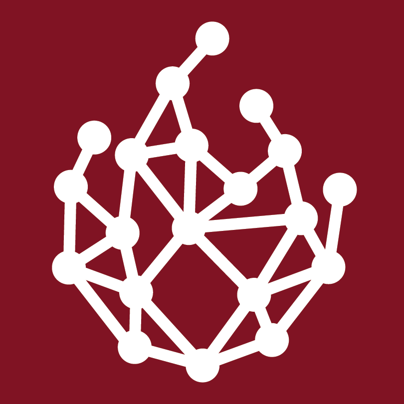
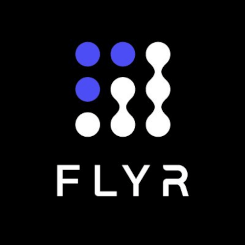
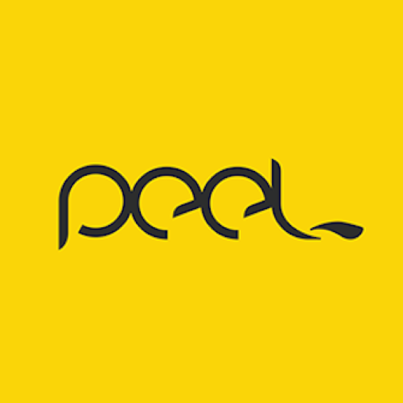

Experience
Software Engineer @ Truu.ai
November 2025 - February 2026 | San Francisco Bay Area, CA
Shipped features for enterprise security analyst workflows for an AI-powered security platform. Built a cross-client mapping system to investigate threats from multiple data source providers. Implemented role-based access controls to scope investigation permissions by role. Delivered a log export pipeline for large-scale offline analysis. Consolidated duplicate authentication logic to improve platform reliability and maintainability. Built a web scraping pipeline to auto-generate a glossary of company jargon from internal documentation.

Research Scholar @ ML Alignment & Theory Scholars
June 2024 - August 2024 | Berkeley, CA
Trained steering vectors to reduce deceptive behavior in LLMs using PyTorch.
Software Engineering Intern @ Muninn
January 2024 - April 2024 | Copenhagen, Denmark
Researched and spearheaded efforts to integrate our AI Prevent with Cisco ISE to block suspicious network activity. Completed Agile story to increase visibility of device Ubuntu version and many sprint tasks to upgrade Spring Boot.
Data Science Intern @ SkillLab
September 2023 - December 2023 | Amsterdam, Netherlands
Developed dashboards and auto-generated reports for company impact tracking using SQL, Python, and Postgres. Customer Success team reported swift data delivery. Provided detailed documentation of my work to smoothly handoff my work to other employees. Organized a meditation event, interns lunch, and 1-1s to get to know coworkers.

Data Science Intern @ FLYR for Hospitality
June 2023 - September 2023 | London, United Kingdom
Demonstrated viability of agent-based models to create digital twins of hotel guests. Developed metrics to evaluate model accuracy and improved some metrics by 50% or more. Streamlined simulation generation and hyperparameter scanning processes using Python and Pandas. Provided detailed documentation and successfully onboarded an employee to continue my work.
Software Engineer Intern @ Tableau
May 2022 - August 2022 | Seattle, WA
Built an Apache Flink job in Java to calculate site availability by parsing logs and sending data to Snowflake and AWS. Identified availability discrepancies of >50% between data sources using Python, SQL, and Tableau visualizations.
Undergraduate Researcher @ Tegmark Research Group, MIT
May 2020 - August 2020 | Remote
Automated detection of news bias with natural language processing. Released Python packages for news processing tools. Created visualizations of topic distributions using statistical procedures like PCA and performed data cleaning to improve classification accuracy.
Public artifact: News Tools
A Python package with tools for extracting dates, determining if a URL is a news article, and more!

Android Developer Intern @ Peel
June 2017 - August 2017 | Remote
Redesigned user interface of helicopter remote control app prototype. Incorporated user feedback to improve user experience. Released app to Google Play Store. App received over 10,000 installs and 4.5/5 star rating on Google Play Store.